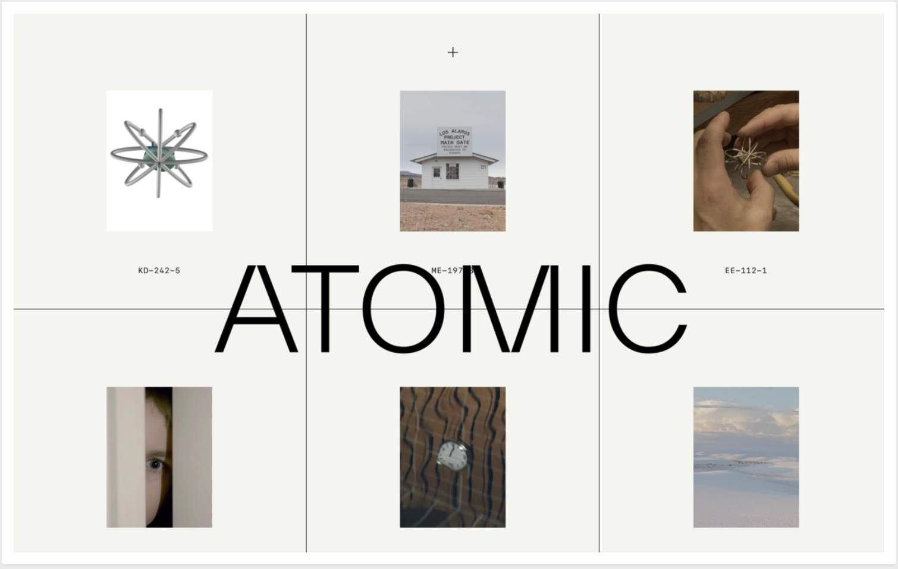

The internet is like a giant network connecting millions of computers worldwide. It's like a huge web of information that allows us to share and access information, communicate with others, and do many other things.
What is the Internet?
The internet is a network of networks. It's made up of many computers and servers (powerful computers) connected to each other.
These connections are made through cables, satellites, and other communication technologies.
How Does the Internet Work?
When you type a website address (URL) into your web browser (like Chrome, Firefox, or Safari) and hit enter, your computer sends a request to a server that hosts that website. The server then sends the website's files back to your computer, which your browser interprets and displays as a web page.
Key Components of the Internet
Web Servers: These are computers that store and serve websites to users when they request them.
Routers: These are devices that help direct internet traffic between different computers and networks.
Internet Service Providers (ISPs): These are companies that provide access to the Internet, usually through a subscription service.
How Do We Use the Internet?
We use the internet for many things, such as: Communicating with others through email, messaging apps, and social media. Accessing information through websites, blogs, and online encyclopedias. Shopping online, watching videos, playing games, and much more.
Benefits of the Internet:
The internet has made accessing information from anywhere in the world much easier and faster.
It has also revolutionized communication, allowing us to instantly connect with people globally.
The Internet has opened up new opportunities for learning, entertainment, and business.
Safety and Responsibility
While the internet offers many benefits, it's important to use it responsibly.
This includes being mindful of what you share online, being aware of online threats like scams and cyberbullying, and respecting others' privacy and intellectual property rights.
Web design principles are fundamental concepts that guide the arrangement of elements on a web page to create a visually appealing and functional design. A well-planned layout can enhance the user experience by making it easier for visitors to navigate the site and find the necessary information. Considerations: Factors such as the placement of navigation menus, the use of white space, and the organization of content can all impact the layout of a web page.
Grid System
A Grid System maintains consistency and alignment across the design, making it easier for users to navigate and understand the content.
Grids can be used in both vertical and horizontal orientations. In the first image, all blocks and images are consistently aligned. The second image has three vertical lines and one horizontal line. The vertical grid contains different elements, but each block is aligned. The same applies to the horizontal grid at the bottom, where all elements are aligned and are the same size.

Photo: Atomic
Photo: The Atlantic
White Space
The negative space between and around elements on a webpage.
In the first image, you'll notice white or negative space that separates the elements, helping to navigate the page.The second image has a significant amount of white space, which directs users' attention to the photo.
Websites comparing a cluttered webpage with a well-spaced webpage
Photo: No Filter Space
Photo: Nick Art
Visual Hierarchy
Visual hierarchy refers to arranging web page elements to guide users' attention. It helps users understand the content hierarchy and navigate the page easily.
This image demonstrates the effective use of visual hierarchy. What catches your eye first? The larger heading is strategically placed to emphasize its importance, aiding in navigating the page.
Typography is the art and technique of arranging type to make written language legible, readable, and visually appealing. It involves selecting typefaces, font sizes, line lengths, and spacing to convey the message effectively. Typography plays a crucial role in design, influencing how the audience perceives and understands information.
Key aspects of typography
Typefaces: Typefaces, or fonts, are the different styles and designs of letters, numbers, and symbols. Each typeface has a unique character and can convey different tones and emotions.
Font Families: Font families include variations of a typeface, such as bold, italic, and light. These variations can be used to create hierarchy and emphasis within the text.
Hierarchy: Typography is used to create a hierarchy in text, with different font sizes, weights, and styles used to distinguish between headings, subheadings, and body text.
In web design, typography is crucial in creating a visually appealing and user-friendly experience. It is important to choose fonts that are easy to read on screens and use typography to create a clear information hierarchy.
User Experience (UX) is a critical aspect of web design that focuses on creating a positive, meaningful, and enjoyable experience for users interacting with a website or web application. It encompasses various elements contributing to the overall user experience, including usability, accessibility, and user interface design. Here's an in-depth look at these elements and the importance of UX in web design:
Importance of UX in Web Design
User Satisfaction: A well-designed UX enhances user satisfaction by providing a seamless and enjoyable experience. Users are more likely to return to a website that meets their needs and provides a positive experience.
User Engagement: Good UX design encourages users to engage with the website, increasing the time spent on the site and the likelihood of achieving conversion goals, such as making a purchase or signing up for a service.
Brand Loyalty: Positive user experiences lead to brand loyalty. Users with a good experience are more likely to recommend the website to others and become repeat customers.
Competitive Advantage: In today's competitive digital landscape, UX can be a key differentiator. Websites with superior UX are more likely to stand out and attract and retain users compared to those with poor UX.
Elements of UX
UsabilityUsability refers to how easy it is for users to navigate and interact with a website. Key usability aspects include intuitive navigation, clear information architecture, and efficient task completion.
Accessibility: Accessibility ensures that websites are usable by people of all abilities, including those with disabilities. This includes designing for screen readers, ensuring color contrast for readability, and providing alternative text for images.
User Interface (UI) Design: UI design focuses on the visual elements of a website, such as layout, colors, typography, and interactive elements. A well-designed UI enhances the overall user experience and makes the website aesthetically pleasing and easy to use.
Information Architecture: Information architecture involves organizing and structuring content on a website to make it easy for users to find what they're looking for. This includes creating clear navigation menus, categorizing content logically, and providing search functionality.
Interaction DesignInteraction design focuses on how users interact with interactive elements on a website, such as buttons, forms, and menus. It aims to make these interactions intuitive and seamless, guiding users through the website's features and functionalities.
UX is crucial in web design, directly impacting user satisfaction, engagement, and brand loyalty. By focusing on usability, accessibility, and user interface design, web designers can create websites that provide exceptional user experiences and achieve business objectives.
Good vs Bad UX
Photo: W-3 Lab
Good
The interface is intuitive and easy to navigate
The design is clear and consistent
The design is accessible to all users
The website or app loads quickly and responds promptly to user interactions
The design is visually appealing
The design is focused on meeting the needs and preferences of the user
Bad
The interface is confusing and difficult to navigate
The design is inconsistent
The design is inaccessible
The website or app is slow to load or respond
The design is visually unappealing or cluttered
The design is not user-centric, with features and content that are irrelevant or confusing to the user